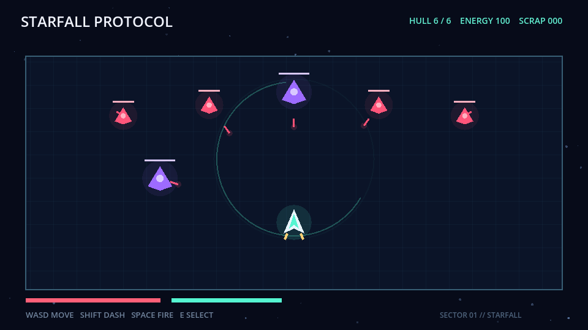
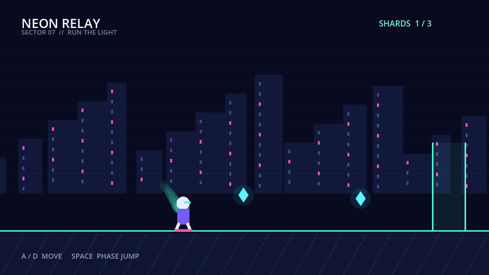
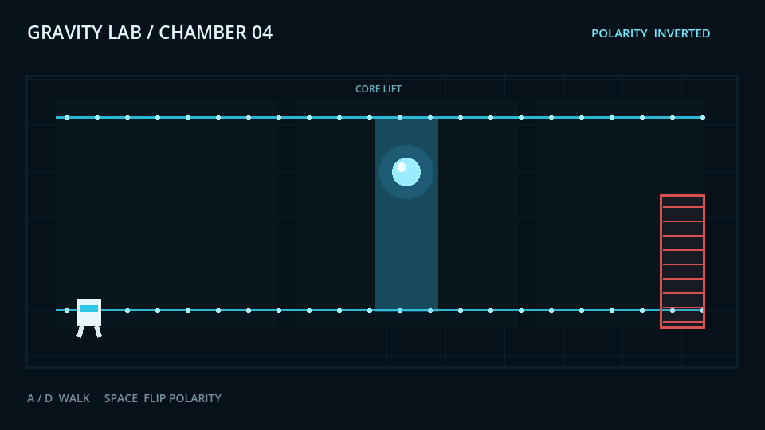
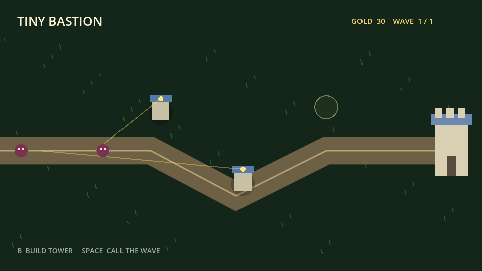
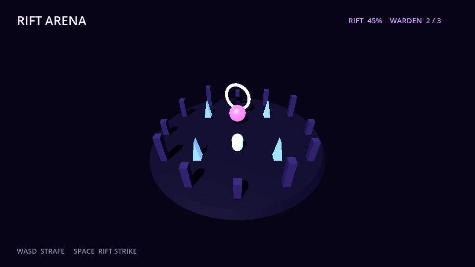

Golden demo · action vertical slice
Starfall Protocol / 星坠协议
Survive the drone encounter, choose a protocol, and defeat the Oracle in an original 8–12 minute Godot slice.

Game coding agent infrastructure
Evaluate behavior. Capture rollouts.
Godot-first evaluation infrastructure for game coding agents, designed for private tasks, hidden grading, and training-ready repair trajectories.
Evidence over claims
GamePhanes launches the project, performs real inputs, observes runtime state, and checks deterministic assertions before reporting success.
One golden demo. Five reference surfaces.
Each slice has a distinct art direction, playable loop, external harness, and deterministic score.
Survive the drone encounter, choose a protocol, and defeat the Oracle in an original 8–12 minute Godot slice.

Sprint through an electric skyline, phase-jump, and chain three energy shards into the relay.

Reposition a field transmitter and burn threats from a living radio map.

Reverse polarity, stabilize an energy core, and unlock the sealed chamber.

Spend carefully, place two towers, and hold the miniature keep until dawn.

Enter a low-poly breach, strike its warden, and stabilize the dimensional ring.
Closed-loop engineering
Designed for agents
Every evaluation runs against a temporary copy, leaving the original candidate project unchanged.
prepareSandbox(project)
Benchmark-owned drivers load the game, perform actions, and emit structured runtime evidence.
GAMEPHANES_EVENT {...}
Movement, velocity, score, health, and other state can be evaluated without an opaque model judge.
velocity_y < 0
Private task variants and benchmark-owned evaluators will measure generalization without exposing answers.
task@version -> private score
Actions, patches, runtime evidence, failures, and costs form training-ready repair trajectories.
{ actions, evidence, score }
Asset engineering
Every asset can carry its source, license, files, and runtime metadata before an Agent places it in a scene.
Machine-readable proof
Store it, compare it, or use failures as the next repair prompt.
{
"task_id": "platformer_basic_001",
"build_success": true,
"runtime_success": true,
"functional_score": 1,
"total_score": 1
}Roadmap
Open contract. Hidden evaluation. Better agents.